地图编辑器:建造工具
顶点、边和面,裁剪工具,CSG,笔刷形状,变换,曲面片,纹理,区域,过滤器,图层和模型——NetRadiant-Custom 的工具,按键、菜单和对话框都相同。
顶点、边和面#
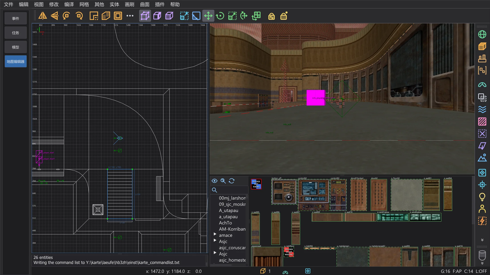
选中笔刷或曲面片,按 V(顶点)、E(边)或 F(面)。单击选择点,拖动即可改变笔刷形状;与 NetRadiant-Custom 一样,笔刷由其点重新构建。再按一次同一键返回普通选择。B 是建造工具(挤出、构建链、克隆),G 是用于面纹理的 UV 工具。纹理锁定(Shift+T)在移动笔刷时保持纹理不动。
裁剪工具#
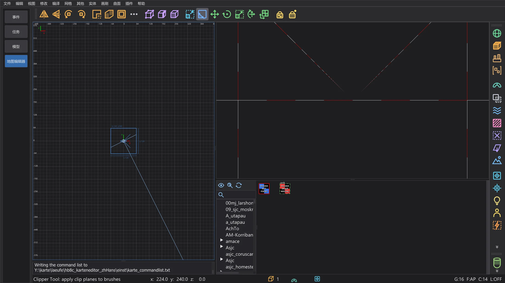
选中笔刷后按 X。在二维视图中单击最多三个点,或在摄像机中单击表面,来确定切割平面;可以拖动这些点来修正。Enter 切割并保留一侧,Shift+Enter 分成两半,Ctrl+Enter 切换保留的一侧。双击执行切割或分割,取决于首选项页 裁剪器 的设置。
CSG#
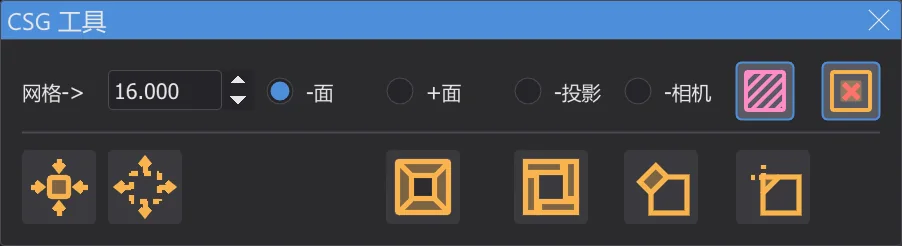
画刷 > CSG:CSG 减去(Shift+U)把选中的笔刷从所有与之接触的笔刷中挖掉,CSG 合并 把笔刷合并成一个凸笔刷,CSG 包裹合并(Ctrl+U)把它们包成一个,CSG 相交(Ctrl+Shift+U)只保留共同部分,生成房间 把笔刷变成空心房间。设为细节(Alt+D)和 设为结构(Alt+S)设置细节标志。
笔刷形状和变换#
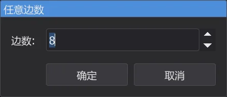
画刷 把选中的笔刷变成 棱柱、圆锥、球体、岩石 或 二十面体;一个小对话框会询问边数。Ctrl+3 ... 9 围绕当前二维视图的轴生成相应边数的棱柱。修改 围绕选中对象的中心旋转和镜像,任意旋转(Shift+R)和 任意缩放(Ctrl+Shift+S)可输入精确数值。重复变换(Ctrl+R)重复上一次移动、旋转或缩放,重置变换(Alt+R)清除它。
曲面片#
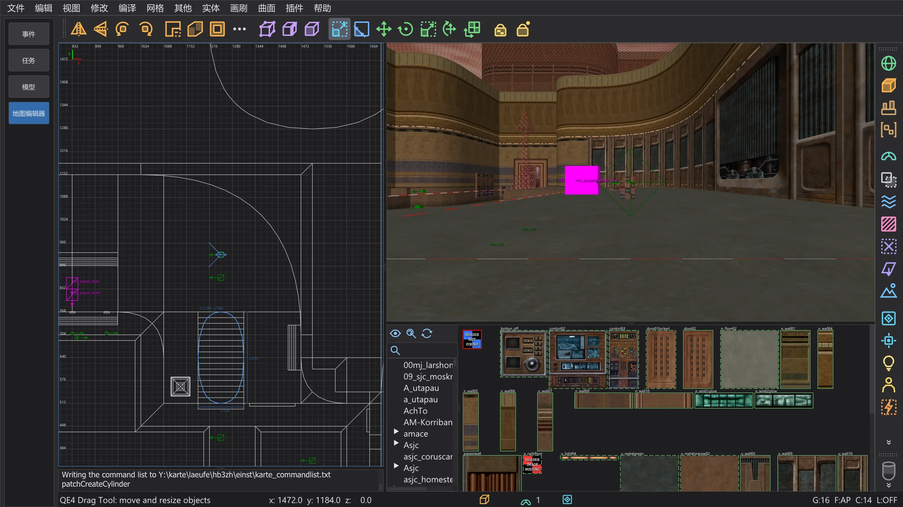
曲面 菜单在选中对象的范围内生成曲面片:平面(简单曲面网格,Shift+P)、斜面、端盖、圆柱、圆锥、球体,以及带尺寸对话框的精确形状。插入/删除 添加或删除行与列,矩阵 反转(Ctrl+I)、转置(Ctrl+Shift+M)、重新分布和平滑。封盖所选(Shift+C)封闭两端,加厚(Ctrl+T)给曲面片加厚度,变形 随机变形。曲面片的纹理:自然化(Ctrl+N)、反转 X 和 Y、重置。
纹理#
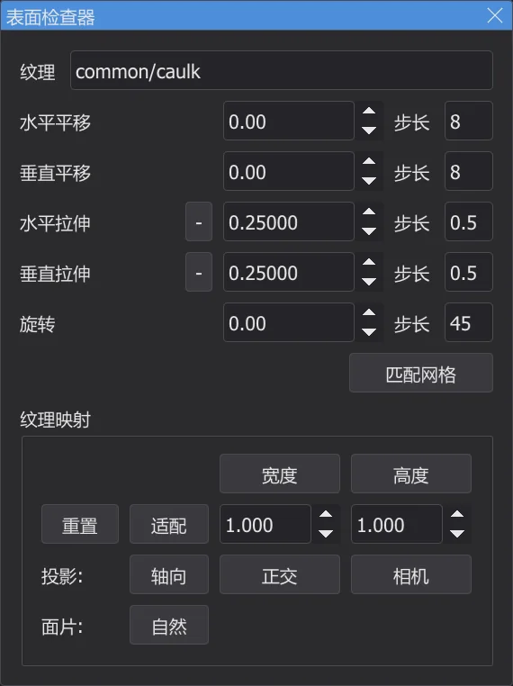
表面检查器(S)显示选中面的纹理:偏移、缩放和旋转,方向键的步长,适配(Ctrl+F)以及投影方式(轴向、正交、来自摄像机)。不打开该窗口时,Shift + 方向键移动纹理,Ctrl + 方向键缩放,Shift+PgUp / PgDn 旋转。选择同纹理(Ctrl+Shift+A)选择使用当前纹理的所有面。启用 标签界面 后,纹理浏览器会提供用于整理纹理的标签。
选择、区域和文件#
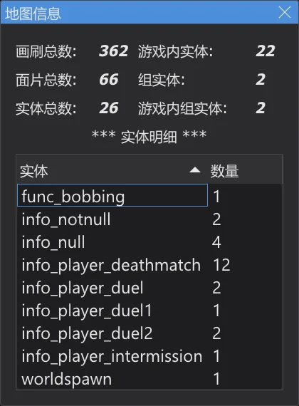
选择内部 和 选择接触的 选择位于选中笔刷内部或与之接触的对象。视图 > 区域 只显示地图的一部分:设为 XY 视图(二维视图的可见区域)、设为画刷、设为所选(Ctrl+Shift+R)、关闭。文件 > 保存区域 保存该区域,并在四周加上墙和玩家起点;保存所选 只保存选中对象,导入 添加另一张地图。查找画刷 按实体编号和笔刷编号选择笔刷。地图每 15 分钟自动保存一次(首选项页 自动保存)。
过滤器#
视图 > 过滤 和右侧的过滤器栏可以隐藏某类对象:世界笔刷(Alt+1)、实体、caulk、clip、液体、细节笔刷、曲面片、灯光、模型、触发器等。有些按钮在右键单击时执行其他操作,如其工具提示所述:把选中对象设为细节或结构、创建 func_group、贴上 caulk 或工具纹理。反转过滤 和 重置过滤 将所有过滤器反转或关闭。
图层#
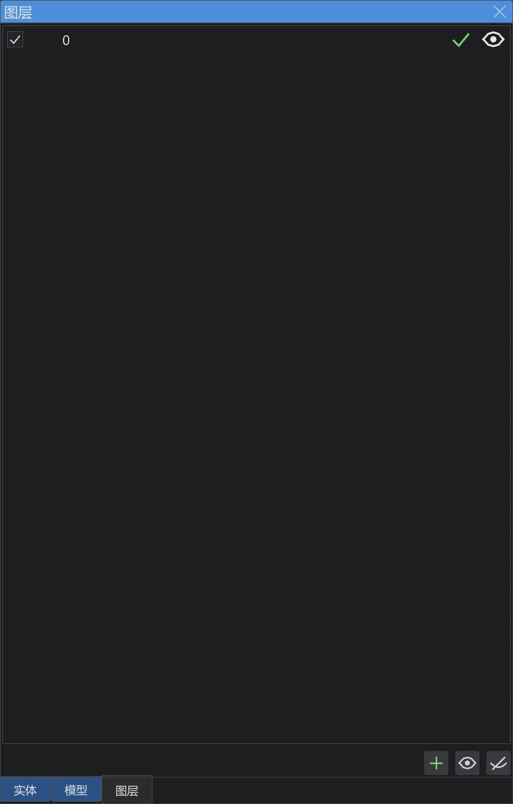
图层用于把地图的各部分分组。在 图层浏览器(L)中可以新建和重命名图层,通过拖动嵌套图层,用眼睛图标隐藏或显示图层,并把选中对象移入某个图层(Shift+Q);Ctrl+Q 把选择扩展到其所在图层。新对象会放入当前图层。与 NetRadiant-Custom 一样,图层保存在 .map 文件中。
模型#
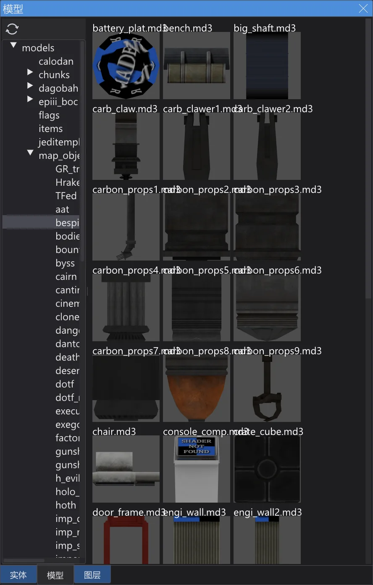
misc_model 等实体会在两个视图中显示其模型(.md3、.glm、.ase),包括皮肤、modelscale 和角度。在 模型浏览器(/)中双击文件夹会加载其中的模型;单击模型会把它赋给选中的实体,双击则在摄像机前插入一个新的 misc_model。模型修改后,刷新模型 重新加载它们。
首选项#
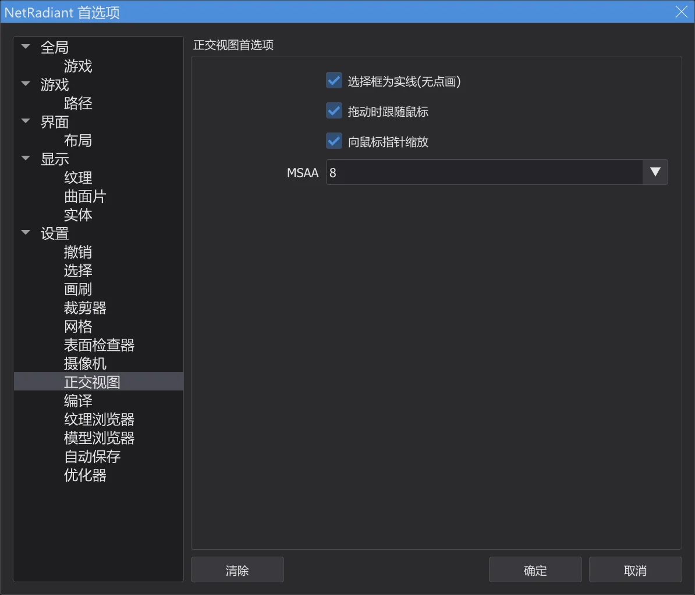
NetRadiant-Custom 首选项的所有页面都可用:画刷(默认纹理缩放、新地图的笔刷格式、始终使用 caulk)、网格、撤销、正交视图(实线或点画的选择框、拖动到边缘时跟随鼠标、向鼠标指针缩放)、编译、设置(复制后微移、启动时加载上次的地图)。在 游戏 中选择 Jedi Academy 或 Jedi Outcast、模组和制图模式(单人或多人实体),在 路径 中设置游戏文件夹和最多五个附加文件夹。与 NetRadiant-Custom 一样,选择其他游戏会询问是否重启地图编辑器。
菜单和窗口#
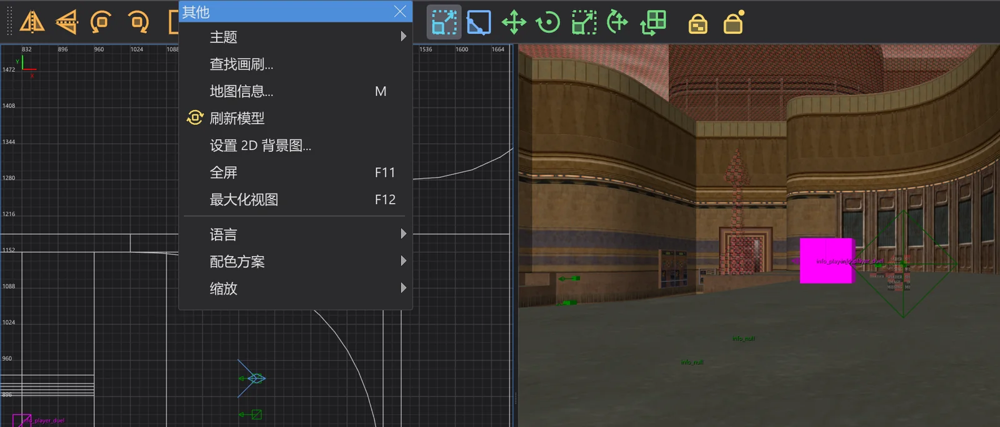
单击菜单顶部的虚线可将其撕下成为一个保持打开的窗口(布局 页上的 可分离菜单)。其他 > 全屏(F11)全屏显示,最大化视图(F12)放大鼠标下的视图。OpenGL 字体 选择二维视图和摄像机视图的字体,设置 2D 背景图 把一个图像文件放到当前二维视图中选中对象的范围内,便于描摹。插件见 地图编辑器:插件 页,用 q3map2 编译见 地图编辑器:编译地图 页。